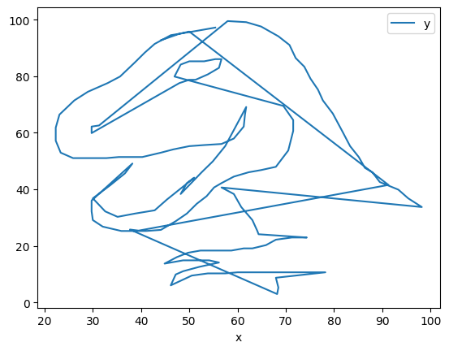
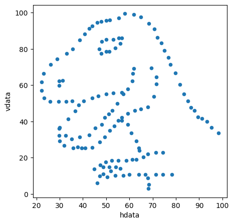

import pandas as pd
https://pandas.pydata.org/
Pandas data-manipulation capabilities are built on top of NumPy, utilizing its fast array processing, and its graphing capabilities are built on top of Matplotlib.
“pandas is a fast, powerful, flexible and easy to use open source data analysis and manipulation tool, built on top of the Python programming language.”
It may be one of the most widely used tools for data munging
- present data in nice formats
- multiple convenient methods for filtering data
- work with a variety of data formats (CSV, Excel, …)
- convenient functions for quickly plotting data
The name comes from panel data (and is also a play on python data analysis)
Import the library:
Import the data:
dinodata = pd.read_csv('https://raw.githubusercontent.com/benjum/UCLA-24A6-DH140/main/data/DatasaurusDozen.csv')Look at some data values:
dinodata| dataset | x | y | |
|---|---|---|---|
| 0 | dino | 55.384600 | 97.179500 |
| 1 | dino | 51.538500 | 96.025600 |
| 2 | dino | 46.153800 | 94.487200 |
| 3 | dino | 42.820500 | 91.410300 |
| 4 | dino | 40.769200 | 88.333300 |
| ... | ... | ... | ... |
| 1841 | wide_lines | 33.674442 | 26.090490 |
| 1842 | wide_lines | 75.627255 | 37.128752 |
| 1843 | wide_lines | 40.610125 | 89.136240 |
| 1844 | wide_lines | 39.114366 | 96.481751 |
| 1845 | wide_lines | 34.583829 | 89.588902 |
1846 rows × 3 columns
Making a scatter plot of the data in the x and y columns is easy:
dinodata.plot(x = 'x', y = 'y', kind = 'scatter')What are we looking at?
The above command looks easy, but there’s more to the data than this.
dinodata[dinodata['dataset']=='dino'].plot(x='x', y='y', kind='scatter');Basic data structures in Pandas
Python can store values in a variety of data structures: single variables, lists, dictionaries, sets, etc.
Pandas has two key data structures for storing Python variables:
- Series
- 1D
- Like an array
- Items are labeled by an index
- Dataframes
- 2D
- Like a spreadsheet
- Items are labeled by an index (row label) and column name
dinodata is a dataframe:
dinodata| dataset | x | y | |
|---|---|---|---|
| 0 | dino | 55.384600 | 97.179500 |
| 1 | dino | 51.538500 | 96.025600 |
| 2 | dino | 46.153800 | 94.487200 |
| 3 | dino | 42.820500 | 91.410300 |
| 4 | dino | 40.769200 | 88.333300 |
| ... | ... | ... | ... |
| 1841 | wide_lines | 33.674442 | 26.090490 |
| 1842 | wide_lines | 75.627255 | 37.128752 |
| 1843 | wide_lines | 40.610125 | 89.136240 |
| 1844 | wide_lines | 39.114366 | 96.481751 |
| 1845 | wide_lines | 34.583829 | 89.588902 |
1846 rows × 3 columns
head(n): show us the firstnrows (5 by default)tail(n): show us the lastnrows (5 by default)info(): a range of summary info
dinodata.head()| dataset | x | y | |
|---|---|---|---|
| 0 | dino | 55.3846 | 97.1795 |
| 1 | dino | 51.5385 | 96.0256 |
| 2 | dino | 46.1538 | 94.4872 |
| 3 | dino | 42.8205 | 91.4103 |
| 4 | dino | 40.7692 | 88.3333 |
dinodata.tail()| dataset | x | y | |
|---|---|---|---|
| 1841 | wide_lines | 33.674442 | 26.090490 |
| 1842 | wide_lines | 75.627255 | 37.128752 |
| 1843 | wide_lines | 40.610125 | 89.136240 |
| 1844 | wide_lines | 39.114366 | 96.481751 |
| 1845 | wide_lines | 34.583829 | 89.588902 |
dinodata.info()<class 'pandas.core.frame.DataFrame'>
RangeIndex: 1846 entries, 0 to 1845
Data columns (total 3 columns):
# Column Non-Null Count Dtype
--- ------ -------------- -----
0 dataset 1846 non-null object
1 x 1846 non-null float64
2 y 1846 non-null float64
dtypes: float64(2), object(1)
memory usage: 43.4+ KBThere are several other useful dataframe attributes and methods that will allow you to get summary info: * columns : column names * dtypes : data types of the columns (dataframes can hold different datatypes in different columns) * index : information about the row indices (they don’t have to be numerical) * shape : the size of the dataframe in each dimension * describe() : basic statistics about the data columns
dinodata.columnsIndex(['dataset', 'x', 'y'], dtype='object')dinodata.dtypesdataset object
x float64
y float64
dtype: objectdinodata.indexRangeIndex(start=0, stop=1846, step=1)dinodata.shape(1846, 3)dinodata.describe()| x | y | |
|---|---|---|
| count | 1846.000000 | 1846.000000 |
| mean | 54.265695 | 47.835099 |
| std | 16.713001 | 26.847766 |
| min | 15.560750 | 0.015119 |
| 25% | 41.073403 | 22.561073 |
| 50% | 52.591269 | 47.594450 |
| 75% | 67.277845 | 71.810778 |
| max | 98.288123 | 99.694680 |
dinodata.describe(include = 'all')| dataset | x | y | |
|---|---|---|---|
| count | 1846 | 1846.000000 | 1846.000000 |
| unique | 13 | NaN | NaN |
| top | dino | NaN | NaN |
| freq | 142 | NaN | NaN |
| mean | NaN | 54.265695 | 47.835099 |
| std | NaN | 16.713001 | 26.847766 |
| min | NaN | 15.560750 | 0.015119 |
| 25% | NaN | 41.073403 | 22.561073 |
| 50% | NaN | 52.591269 | 47.594450 |
| 75% | NaN | 67.277845 | 71.810778 |
| max | NaN | 98.288123 | 99.694680 |
If you select one of the columns of dinodata you’ll get a Series in return:
dinodata['dataset']0 dino
1 dino
2 dino
3 dino
4 dino
...
1841 wide_lines
1842 wide_lines
1843 wide_lines
1844 wide_lines
1845 wide_lines
Name: dataset, Length: 1846, dtype: objectSelecting data from a dataframe
If you have a dataframe df and want to look at a specific column columnname, use df['columnname']
dinodata['x']0 55.384600
1 51.538500
2 46.153800
3 42.820500
4 40.769200
...
1841 33.674442
1842 75.627255
1843 40.610125
1844 39.114366
1845 34.583829
Name: x, Length: 1846, dtype: float64Dataframe can have both numerical- and label-based indices. There is specific data retrieval syntax that accommodates this.
# This will give an error!
dinodata[0]--------------------------------------------------------------------------- KeyError Traceback (most recent call last) File ~/DH140/.venv/lib/python3.11/site-packages/pandas/core/indexes/base.py:3805, in Index.get_loc(self, key) 3804 try: -> 3805 return self._engine.get_loc(casted_key) 3806 except KeyError as err: File index.pyx:167, in pandas._libs.index.IndexEngine.get_loc() File index.pyx:196, in pandas._libs.index.IndexEngine.get_loc() File pandas/_libs/hashtable_class_helper.pxi:7081, in pandas._libs.hashtable.PyObjectHashTable.get_item() File pandas/_libs/hashtable_class_helper.pxi:7089, in pandas._libs.hashtable.PyObjectHashTable.get_item() KeyError: 0 The above exception was the direct cause of the following exception: KeyError Traceback (most recent call last) Cell In[22], line 2 1 # This will give an error! ----> 2 dinodata[0] File ~/DH140/.venv/lib/python3.11/site-packages/pandas/core/frame.py:4102, in DataFrame.__getitem__(self, key) 4100 if self.columns.nlevels > 1: 4101 return self._getitem_multilevel(key) -> 4102 indexer = self.columns.get_loc(key) 4103 if is_integer(indexer): 4104 indexer = [indexer] File ~/DH140/.venv/lib/python3.11/site-packages/pandas/core/indexes/base.py:3812, in Index.get_loc(self, key) 3807 if isinstance(casted_key, slice) or ( 3808 isinstance(casted_key, abc.Iterable) 3809 and any(isinstance(x, slice) for x in casted_key) 3810 ): 3811 raise InvalidIndexError(key) -> 3812 raise KeyError(key) from err 3813 except TypeError: 3814 # If we have a listlike key, _check_indexing_error will raise 3815 # InvalidIndexError. Otherwise we fall through and re-raise 3816 # the TypeError. 3817 self._check_indexing_error(key) KeyError: 0
# This will not give an error
dinodata[0:1]| dataset | x | y | |
|---|---|---|---|
| 0 | dino | 55.3846 | 97.1795 |
It’s best to stick with loc and iloc for the moment to index dataframes. * loc : label-based indexing (which can look numerical if the row index is a number) * iloc : numerical indexing
# the first row;
# return value is a Series
dinodata.loc[0]dataset dino
x 55.3846
y 97.1795
Name: 0, dtype: object# the first row;
# return value is a Dataframe (note the index is [0])
dinodata.loc[[0]]| dataset | x | y | |
|---|---|---|---|
| 0 | dino | 55.3846 | 97.1795 |
# the first two rows;
# return value is a Dataframe (the index is a list [0,1])
dinodata.loc[[0,1]]| dataset | x | y | |
|---|---|---|---|
| 0 | dino | 55.3846 | 97.1795 |
| 1 | dino | 51.5385 | 96.0256 |
# indexing both the row and column
dinodata.loc[0,'x']55.3846# indexing both the row and column
# and returning a dataframe
dinodata.loc[[0],['x']]| x | |
|---|---|
| 0 | 55.3846 |
# you can use lists for the indices
dinodata.loc[[0],['x','y']]| x | y | |
|---|---|---|
| 0 | 55.3846 | 97.1795 |
dinodata.loc[[10],['x','y']]| x | y | |
|---|---|---|
| 10 | 23.0769 | 66.4103 |
iloc is useful when you instead want to index numerically.
dinodata.iloc[0]dataset dino
x 55.3846
y 97.1795
Name: 0, dtype: objectBefore you execute the below, try to predict whether it will return a Series or a Dataframe.
dinodata.iloc[1]dataset dino
x 51.5385
y 96.0256
Name: 1, dtype: objectdinodata.iloc[[1]]| dataset | x | y | |
|---|---|---|---|
| 1 | dino | 51.5385 | 96.0256 |
dinodata.iloc[0:1]| dataset | x | y | |
|---|---|---|---|
| 0 | dino | 55.3846 | 97.1795 |
dinodata.iloc[0:4]| dataset | x | y | |
|---|---|---|---|
| 0 | dino | 55.3846 | 97.1795 |
| 1 | dino | 51.5385 | 96.0256 |
| 2 | dino | 46.1538 | 94.4872 |
| 3 | dino | 42.8205 | 91.4103 |
# this will give an error! you can't use a label-based index like 'x' with iloc
dinodata.iloc[0:4,'x']--------------------------------------------------------------------------- ValueError Traceback (most recent call last) File ~/DH140/.venv/lib/python3.11/site-packages/pandas/core/indexing.py:966, in _LocationIndexer._validate_tuple_indexer(self, key) 965 try: --> 966 self._validate_key(k, i) 967 except ValueError as err: File ~/DH140/.venv/lib/python3.11/site-packages/pandas/core/indexing.py:1614, in _iLocIndexer._validate_key(self, key, axis) 1613 else: -> 1614 raise ValueError(f"Can only index by location with a [{self._valid_types}]") ValueError: Can only index by location with a [integer, integer slice (START point is INCLUDED, END point is EXCLUDED), listlike of integers, boolean array] The above exception was the direct cause of the following exception: ValueError Traceback (most recent call last) Cell In[36], line 3 1 # this will give an error! you can't use a label-based index like 'x' with iloc ----> 3 dinodata.iloc[0:4,'x'] File ~/DH140/.venv/lib/python3.11/site-packages/pandas/core/indexing.py:1184, in _LocationIndexer.__getitem__(self, key) 1182 if self._is_scalar_access(key): 1183 return self.obj._get_value(*key, takeable=self._takeable) -> 1184 return self._getitem_tuple(key) 1185 else: 1186 # we by definition only have the 0th axis 1187 axis = self.axis or 0 File ~/DH140/.venv/lib/python3.11/site-packages/pandas/core/indexing.py:1690, in _iLocIndexer._getitem_tuple(self, tup) 1689 def _getitem_tuple(self, tup: tuple): -> 1690 tup = self._validate_tuple_indexer(tup) 1691 with suppress(IndexingError): 1692 return self._getitem_lowerdim(tup) File ~/DH140/.venv/lib/python3.11/site-packages/pandas/core/indexing.py:968, in _LocationIndexer._validate_tuple_indexer(self, key) 966 self._validate_key(k, i) 967 except ValueError as err: --> 968 raise ValueError( 969 "Location based indexing can only have " 970 f"[{self._valid_types}] types" 971 ) from err 972 return key ValueError: Location based indexing can only have [integer, integer slice (START point is INCLUDED, END point is EXCLUDED), listlike of integers, boolean array] types
# instead of referncing the column with 'x'
# iloc indexes it numerically
dinodata.iloc[0:4, 1]0 55.3846
1 51.5385
2 46.1538
3 42.8205
Name: x, dtype: float64dinodata.iloc[[0,1,2,3],[1]]| x | |
|---|---|
| 0 | 55.3846 |
| 1 | 51.5385 |
| 2 | 46.1538 |
| 3 | 42.8205 |
dinodata.iloc[0,0]'dino'dinodata.loc[0,'dataset']'dino'What’s the data for ‘dataset’ == ‘dino’? Boolean indexing
It is useful to be able to get elements where certain conditions are true.
Like here, we may want to get only those rows that are part of the ‘dino’ dataset.
This can be accomplished with boolean indexing, where the index is a True/False condition, and there is one such value for every row.
The following sets up the boolean series of True/False values for every row.
dinodata['dataset'] == 'dino'0 True
1 True
2 True
3 True
4 True
...
1841 False
1842 False
1843 False
1844 False
1845 False
Name: dataset, Length: 1846, dtype: boolWe can use that as the index to dinodata, i.e., for any dataframe df we can use df[condition] to get only those rows where condition is True
dinodata[dinodata['dataset'] == 'dino']| dataset | x | y | |
|---|---|---|---|
| 0 | dino | 55.3846 | 97.1795 |
| 1 | dino | 51.5385 | 96.0256 |
| 2 | dino | 46.1538 | 94.4872 |
| 3 | dino | 42.8205 | 91.4103 |
| 4 | dino | 40.7692 | 88.3333 |
| ... | ... | ... | ... |
| 137 | dino | 39.4872 | 25.3846 |
| 138 | dino | 91.2821 | 41.5385 |
| 139 | dino | 50.0000 | 95.7692 |
| 140 | dino | 47.9487 | 95.0000 |
| 141 | dino | 44.1026 | 92.6923 |
142 rows × 3 columns
Boolean indexing also works as the index when using loc
dinodata.loc[dinodata['dataset'] == 'dino']| dataset | x | y | |
|---|---|---|---|
| 0 | dino | 55.3846 | 97.1795 |
| 1 | dino | 51.5385 | 96.0256 |
| 2 | dino | 46.1538 | 94.4872 |
| 3 | dino | 42.8205 | 91.4103 |
| 4 | dino | 40.7692 | 88.3333 |
| ... | ... | ... | ... |
| 137 | dino | 39.4872 | 25.3846 |
| 138 | dino | 91.2821 | 41.5385 |
| 139 | dino | 50.0000 | 95.7692 |
| 140 | dino | 47.9487 | 95.0000 |
| 141 | dino | 44.1026 | 92.6923 |
142 rows × 3 columns
dinodata.loc[dinodata['dataset'] == 'circle']| dataset | x | y | |
|---|---|---|---|
| 1136 | circle | 55.993030 | 79.277264 |
| 1137 | circle | 50.032254 | 79.013071 |
| 1138 | circle | 51.288459 | 82.435940 |
| 1139 | circle | 51.170537 | 79.165294 |
| 1140 | circle | 44.377915 | 78.164628 |
| ... | ... | ... | ... |
| 1273 | circle | 39.921363 | 19.701850 |
| 1274 | circle | 84.794278 | 55.568650 |
| 1275 | circle | 55.662959 | 83.356480 |
| 1276 | circle | 50.492248 | 78.997532 |
| 1277 | circle | 51.467101 | 79.201845 |
142 rows × 3 columns
Note above what happens to the indices. You should keep in mind this behavior if you want to index the returned result.
dinodata.loc[dinodata['dataset'] == 'dino','x']0 55.3846
1 51.5385
2 46.1538
3 42.8205
4 40.7692
...
137 39.4872
138 91.2821
139 50.0000
140 47.9487
141 44.1026
Name: x, Length: 142, dtype: float64dinodata['dataset'].str.startswith('d')0 True
1 True
2 True
3 True
4 True
...
1841 False
1842 False
1843 False
1844 False
1845 False
Name: dataset, Length: 1846, dtype: booldinodata.loc[dinodata['dataset'].str.startswith('d')]| dataset | x | y | |
|---|---|---|---|
| 0 | dino | 55.384600 | 97.179500 |
| 1 | dino | 51.538500 | 96.025600 |
| 2 | dino | 46.153800 | 94.487200 |
| 3 | dino | 42.820500 | 91.410300 |
| 4 | dino | 40.769200 | 88.333300 |
| ... | ... | ... | ... |
| 1131 | dots | 50.533635 | 17.019581 |
| 1132 | dots | 77.500907 | 50.166986 |
| 1133 | dots | 50.691124 | 87.513960 |
| 1134 | dots | 49.990395 | 83.997357 |
| 1135 | dots | 50.127182 | 82.990750 |
284 rows × 3 columns
dinodata.loc[dinodata['dataset'].str.contains('in')]| dataset | x | y | |
|---|---|---|---|
| 0 | dino | 55.384600 | 97.179500 |
| 1 | dino | 51.538500 | 96.025600 |
| 2 | dino | 46.153800 | 94.487200 |
| 3 | dino | 42.820500 | 91.410300 |
| 4 | dino | 40.769200 | 88.333300 |
| ... | ... | ... | ... |
| 1841 | wide_lines | 33.674442 | 26.090490 |
| 1842 | wide_lines | 75.627255 | 37.128752 |
| 1843 | wide_lines | 40.610125 | 89.136240 |
| 1844 | wide_lines | 39.114366 | 96.481751 |
| 1845 | wide_lines | 34.583829 | 89.588902 |
710 rows × 3 columns
Dataframes have many very useful methods.
… which we will ignore for the moment until next week when we get to exploratory data analysis.
For now: plotting!
Plotting
Let’s make a scatter plot with only the dino dataset
# How do we get that subset of data?
a = dinodata[dinodata['dataset'] == 'dino']Make a plot:
a.plot(x='x', y='y')
What’s with the zig-zags?
By default, pandas will make a line plot connecting the points, and since the points are plotted out of numerical order, the connecting lines zigs back and forth in the x and y direction.
We actually want to plot this as a scatter plot instead of a line plot.
a.plot(x='x', y='y', kind='scatter')
The kind parameter makes it very easy to make a variety of different elementary plots:
line: line plotbar: vertical bar plotbarh: horizontal bar plothist: histogrambox: boxplotkde: kernel density estimation plotdensity: same as kdearea: area plotpie: pie plotscatter: scatter plothexbin: hexbin plot
a.plot(x='x', y='y', kind='bar')This, of course, doesn’t mean that you don’t have to think about what you want to plot before-hand.
To make things easier, let’s look at a subset of data:
b = a[0:15]b| dataset | x | y | |
|---|---|---|---|
| 0 | dino | 55.3846 | 97.1795 |
| 1 | dino | 51.5385 | 96.0256 |
| 2 | dino | 46.1538 | 94.4872 |
| 3 | dino | 42.8205 | 91.4103 |
| 4 | dino | 40.7692 | 88.3333 |
| 5 | dino | 38.7179 | 84.8718 |
| 6 | dino | 35.6410 | 79.8718 |
| 7 | dino | 33.0769 | 77.5641 |
| 8 | dino | 28.9744 | 74.4872 |
| 9 | dino | 26.1538 | 71.4103 |
| 10 | dino | 23.0769 | 66.4103 |
| 11 | dino | 22.3077 | 61.7949 |
| 12 | dino | 22.3077 | 57.1795 |
| 13 | dino | 23.3333 | 52.9487 |
| 14 | dino | 25.8974 | 51.0256 |
b.plot(x='x', y='y', kind='bar')Note that pandas does not necessarily try to order the x-axis here for us.
b.sort_values(by='x')| dataset | x | y | |
|---|---|---|---|
| 12 | dino | 22.3077 | 57.1795 |
| 11 | dino | 22.3077 | 61.7949 |
| 10 | dino | 23.0769 | 66.4103 |
| 13 | dino | 23.3333 | 52.9487 |
| 14 | dino | 25.8974 | 51.0256 |
| 9 | dino | 26.1538 | 71.4103 |
| 8 | dino | 28.9744 | 74.4872 |
| 7 | dino | 33.0769 | 77.5641 |
| 6 | dino | 35.6410 | 79.8718 |
| 5 | dino | 38.7179 | 84.8718 |
| 4 | dino | 40.7692 | 88.3333 |
| 3 | dino | 42.8205 | 91.4103 |
| 2 | dino | 46.1538 | 94.4872 |
| 1 | dino | 51.5385 | 96.0256 |
| 0 | dino | 55.3846 | 97.1795 |
b.sort_values(by='x').plot()b.sort_values(by='x').plot(x='x', y='y', kind='bar')b.sort_values(by='x').plot(x='x', y='y', kind='barh')a.plot(x='x',
y='y',
kind='scatter')
a.plot(x='x',
y='y',
kind='scatter',
figsize=(5,5))a.plot(x='x',
y='y',
kind='scatter',
figsize=(5,5),
xlabel='hdata',
ylabel='vdata')
a.plot(x='x',
y='y',
kind='scatter',
figsize=(5,5),
xlabel='hdata',
ylabel='vdata',
color='black')dinodata[dinodata['dataset']=='dino'].plot(x='x',
y='y',
kind='scatter',
figsize=(5,5),
xlabel='hdata',
ylabel='vdata',
color='black')
What datasets can we look at?
dinodata['dataset'].unique()array(['dino', 'away', 'h_lines', 'v_lines', 'x_shape', 'star',
'high_lines', 'dots', 'circle', 'bullseye', 'slant_up',
'slant_down', 'wide_lines'], dtype=object)datasets = dinodata['dataset'].unique()d2plot = 3
print(datasets[d2plot])
dinodata[dinodata['dataset'] == datasets[d2plot]].plot(x='x',
y='y',
kind='scatter',
figsize=(5,5),
xlabel='hdata',
ylabel='vdata',
color='black')v_linesBrief hint of fun stuff to come
import matplotlib.pyplot as plt
import ipywidgetsdef dinoplot(dataset):
fig,ax = plt.subplots(2,2,figsize=(12,12))
dinodata[dinodata['dataset']==dataset].plot(x='y',
y='x',
kind='hist',
figsize=(5,5),
xlabel='hdata',
ylabel='vdata',
color='black', ax=ax[0,0])
dinodata[dinodata['dataset']==dataset].plot(x='x',
y='y',
kind='scatter',
figsize=(5,5),
xlabel='hdata',
ylabel='vdata',
color='black', ax=ax[1,0])
ax[0,1].text(0.25,0.8,'x_mean = {:.2f}'.format(dinodata.loc[dinodata['dataset']==dataset,'x'].mean()))
ax[0,1].text(0.25,0.6,'y_mean = {:.2f}'.format(dinodata.loc[dinodata['dataset']==dataset,'y'].mean()))
ax[0,1].text(0.25,0.4,'x_stddev = {:.2f}'.format(dinodata.loc[dinodata['dataset']==dataset,'x'].std()))
ax[0,1].text(0.25,0.2,'y_stddev = {:.2f}'.format(dinodata.loc[dinodata['dataset']==dataset,'y'].std()))
dinodata[dinodata['dataset']==dataset].plot(x='x',
y='y',
kind='hist',
figsize=(5,5),
xlabel='hdata',
ylabel='vdata',
color='black', ax=ax[1,1])
ipywidgets.interact(dinoplot,dataset=datasets)<function __main__.dinoplot(dataset)>